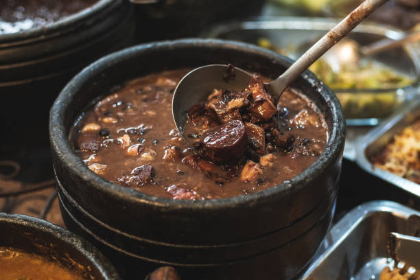
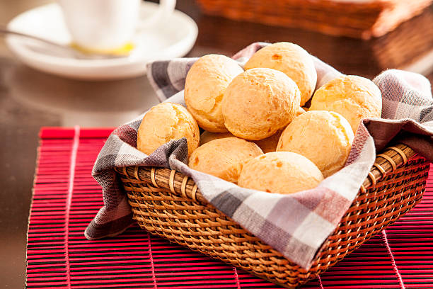
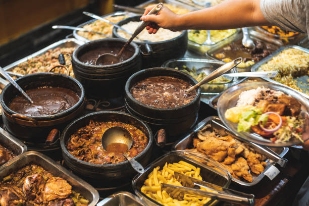
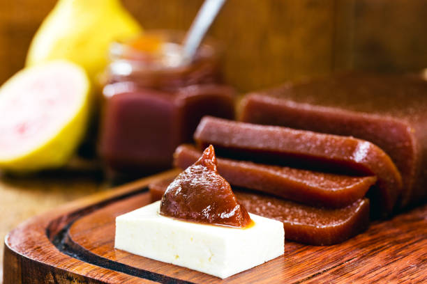
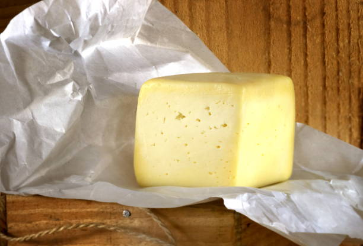
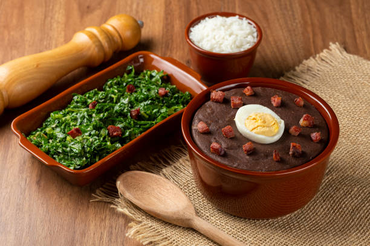
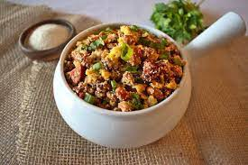
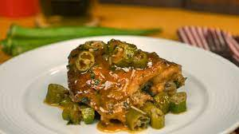

Culinária Mineira
Selecionamos alguns dos mais famosos pratos da culinária mineira que devem estar presentes no roteiro gastronômico
de uma viagem para o estado de Minas Gerais.
Tutu: Bastante consumido em Minas Gerais, o tutu de feijão é constituído basicamente por feijão cozido, temperado e misturado com farinha
de mandioca ou de milho, objetivando uma consistência pastosa. Costuma ser servido em travessas ou panelas de ferro, acompanhado por torresmo,
bacon e/ou ovos cozidos fatiados.
Pão de queijo: Não é possível afirmar com precisão como o pão de queijo foi criado, entretanto acredita-se que durante o século XVIII
as cozinheiras substituíram, na fabricação do pão, a farinha de trigo de má qualidade trazida pelos portugueses pelo polvilho,
adicionavam também os queijos que sobravam e misturavam ovos e leite, enrolavam a massa e colocavam para assar, dando origem ao pão de queijo.
Goiabada Cascão: Patrimônio Imaterial de Ouro Preto, acredita-se que esse doce teve origem nas senzalas mineiras. Os senhores de escravizados
ficavam com a poupa da goiaba e mandavam as cascas e sementes para os escravizados, estes cozinhavam essas cascas e sementes com um pouco de
água, dando origem a goiabada cascão. Com o passar do tempo o doce sofreu algumas modificações até ficar como conhecemos hoje.
Queijo Canastra: Produzido há mais de duzentos anos, é “primo” do queijo de São Jorge, de Portugal. Contudo, as condições da Serra da Canastra
no Brasil (clima, altitude, pastos) faz com que o Queijo Canastra tenha um sabor único. Foi contemplado com o registro de patrimônio cultural
imaterial brasileiro em 2008, pelo conselho consultivo do Instituto do Patrimônio Histórico e Artístico Nacional (Iphan).
Em 2019 ganhou o concurso Mundial Du Fromage, realizado na França e considerado o mais importante do mundo.
Bambá de couve: Originado em Ouro Preto, no período da escravidão, consiste em um caldo a base de fubá. Acredita-se que os escravizados
aproveitavam o mingau de fubá que sobrava da Casa Grande, adicionavam couve rasgada e as partes de carne que recebiam, como orelha e pé. Nos dias
atuais é comum a utilização de linguiça como ingrediente.
Feijão tropeiro: Sendo mais uma herança do período colonial, o prato tem sua origem com os tropeiros, estes que eram homens que utilizavam
cavalos ou burros para realizar o transporte de mercadorias variadas. Eles precisavam de refeições fáceis de fazer com os ingredientes que tinham
acesso e que dessem energia, por isso misturavam farinha, carne e ovos ao feijão.
Ora-pro-nobis: É uma hortaliça bastante utilizada na culinária mineira. Seu nome vem do latim e traduzido para o português quer dizer “orai por nós”.
Um dos pratos mais conhecidos é o frango com ora-pro-nobis. Anualmente, em Sabará, Minas Gerais, ocorre o Festival de Ora-pro-nobis, onde diversos pratos
com esses ingredientes são apresentados.
Frango com quiabo: Um clássico, o ensopado de frango caipira com quiabo está presente no cotidiano não apenas dos mineiros, mas no dos brasileiros
em geral. Atualmente, muitas pessoas utilizam frango industrializado me seu preparo, porém dizem que o resultado obtido não é o mesmo, a essência
e sabor da receita original são perdidos. Como grande parte da gastronomia de Minas Gerais, acredita-se que o prato é consequência da miscigenação
que ocorreu na época, uma vez que o quiabo tem origem africana.